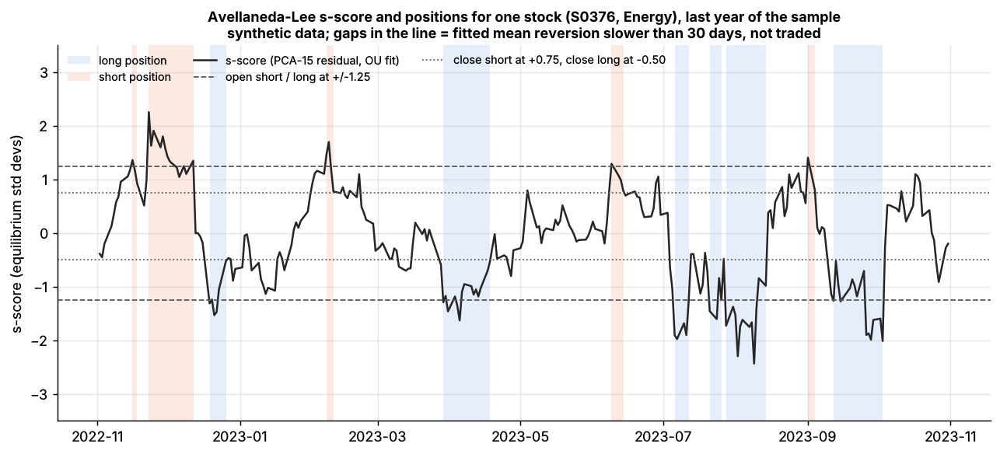
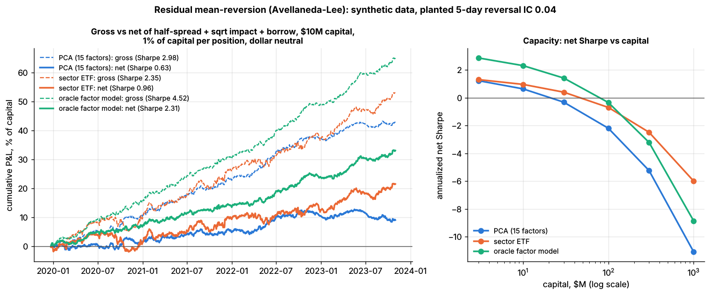

Factor-residual mean reversion¶
TL;DR
- Strip each stock's return of what its factors (market, sector, statistical components) explain. The leftover residual tends to reverse over days: buy stocks whose cumulative residual is unusually low, short the unusually high, hedge the factors.
- Avellaneda & Lee (2010): 15 PCA eigenportfolios, residuals fitted as an Ornstein–Uhlenbeck process, trade at |s| > 1.25. Net of 10 bps round-trip costs: Sharpe 1.44 over 1997–2007 but 0.9 in 2003–07; sector-ETF version 1.1
[Verified].- You are paid for absorbing price-insensitive flows; typical NYSE pricing errors have a 3.2-point standard deviation and a 6.2-week half-life
[Verified].- It is a turnover machine. Lab 09 turns its gross book 57× a year: gross Sharpe 3.0 becomes 0.63 net at $10M and −2.20 at $100M, with a break-even cost of 9.7 bps per dollar traded (synthetic lab result).
- It is crowded: in August 2007 Avellaneda–Lee backtests lost 5% (PCA) and 10% (ETF) in days, then recovered
[Verified].
Level: Core · Read time: ~12 min · Last verified: 2026-11
| Field | Value |
|---|---|
| Family | stat arb |
| Edge source | liquidity provision · behavioral |
| Holding period | 1–15 days (A&L: average expected reversion ~7 days [Verified]; Lab 09: 9.3 days) |
| Counterparty: who pays and why they accept it | Price-insensitive liquidity demanders: funds rebalancing or meeting redemptions, index and ETF flows, liquidations. Their motive is a mandate or a deadline, so a few bps of slippage is acceptable. Traders who overreact to moves without news also pay. |
| Universe & instruments | 500–3,000 liquid US stocks (A&L: market cap above $1B) [Verified]; sector ETFs and index futures as hedges |
| Data required | point-in-time daily (or intraday) returns and volume, sector maps or ETF holdings, a risk model, borrow, event calendars |
| Core algorithms used | P1 Risk models · P2 Covariance estimation and shrinkage · D3 Signal transforms · P3 Mean-variance optimization · P5 Transaction cost and impact models |
| Infra intensity | moderate: daily or intraday batch; execution quality matters more than compute |
| Capacity (rough $ range) | $100M–$1B GMV for the plain signal [Estimate] (at ~50× turnover a $1B book trades ~$200M a day; spread plus impact nears the ~10 bps break-even around that size); more as one input to a multi-signal book. Lab 09: net Sharpe 0.63 at $10M, −2.20 at $100M (synthetic) |
| Typical Sharpe (gross vs net) | A&L, net of 10 bps round trip: PCA 1.44 (1997–2007), 0.9 (2003–07); ETF in trading time 1.51 (2003–07) (academic backtest, decayed after 2002) [Verified]; practitioner net 1–2 as one signal in a diversified book [Lore] |
| Turnover | 40–60× gross a year [Estimate] (holds of 5–10 days); Lab 09: 57× |
| Main risks / failure modes | crowded unwinds, cost overruns, factor leakage, news-driven residuals that drift instead of reverting |
| Crowding risk | high: a published recipe run on shared data and factor models |
| Firm types that run it | quant hedge funds, multi-manager stat-arb pods, proprietary trading firms [Lore] |
| Lab | Lab 09 |
Intuition (the story in plain English)¶
If a chipmaker falls 3% on a day semiconductors fall 3%, there is nothing to trade. If it falls 3% while its sector rises 1% and there is no news, its residual is −4%, and on average part of that comes back.
Pairs trading hedges with one twin. Here every stock gets a synthetic twin built from factors: 15 statistical components, a sector ETF, or a commercial risk model. That gives a residual for every name, not only the few with a natural partner, so the book holds hundreds of small bets.
Economic rationale: why should this make money at all?¶
- Liquidity provision. The same fee that pays short-term reversal: it rises with the VIX (Nagel 2012)
[Verified], and moves on heavy volume reverse more (Campbell, Grossman & Wang 1993)[Reported], which is why A&L also scale returns by volume ("trading time"). - Measured pricing errors. In a structural model of NYSE inventories and retail flow, the typical stock's pricing error has a standard deviation of 3.2 percentage points and a 6.2-week half-life, 9.4% of daily idiosyncratic variance (Hendershott, Menkveld, Praz & Seasholes 2022)
[Verified]. - Overreaction, but only to non-news. Residuals not explained by cash-flow news reverse more; removing news quadruples the risk-adjusted reversal return. Liquidity shocks drive the long side, sentiment the short side (Da, Liu & Schaumburg 2014)
[Verified]. News-driven residuals drift instead (earnings).
flowchart LR
F["Price-insensitive flow<br/>redemption, index trade"] --> P["Residual pushed<br/>away from peers"]
P --> S["s-score crosses band"]
S --> L["Stat-arb book absorbs<br/>the other side"]
L --> R["Pressure fades<br/>residual reverts"]
R --> G["Gross P and L"]
N["Cash-flow news"] -.->|"drifts, does not revert"| PThe trade, step by step¶
- Factors. Take the 252-day correlation matrix (Lab 09 refits it weekly) and its top 15 eigenvectors; eigenportfolio weights are \(Q_{ij} = v_{ij}/\sigma_i\) (PCA). Or use sector ETFs.
- Residuals. Regress each stock's last 60 daily returns (about one earnings cycle) on the factor returns, with an intercept.
- OU fit. Fit the cumulative residual as an AR(1); keep stocks whose mean-reversion time is under 30 days.
- s-score = distance from equilibrium in equilibrium standard deviations, with equilibrium levels centered across stocks.
- Bands (A&L). Open long below −1.25, short above +1.25; close longs above −0.50, shorts below +0.75.
- Hedge. A&L hedge each $1 of stock with β dollars of its ETF (SPY for the PCA book); Lab 09 hedges net dollars with an equal-weight basket.
Worked example with numbers¶
Illustrative stock XYZ, $10M book, 1% per position.
| Quantity | Calculation | Value |
|---|---|---|
| AR(1) fit on 60 days | X[t+1] = a + b X[t] + ζ | b = 0.90, sd(ζ) = 1.2% |
| Mean-reversion time | 1 / (−ln 0.90) | 9.5 days (under 30: tradeable) |
| Equilibrium sd | 1.2% / √(1 − 0.81) | 2.75% |
| s-score, with X = −3.6%, centered m = +0.4% | (−3.6% − 0.4%) / 2.75% | −1.45 → buy $100k, hedge factors |
| OU-implied gain in 7 days | 4.0% × (1 − 0.9⁷) | 2.1%, $2,100 |
| Lab 09 realized gross per round trip | $1.07M ÷ ~5,000 round trips | ~$210 (21 bps) [Estimate] |
| Costs per round trip | $0.81M ÷ ~5,000 | ~$160 (16 bps) |
The model expects 210 bps; the market pays about a tenth of that, because a 60-day OU fit mostly fits noise (the s-score's IC is 0.013). Costs then eat three-quarters of what is left.
Signals and algorithms under the hood¶
Factors come from P1 and P2; the s-score is a D3 transform. Production books feed −s into an optimizer (P3, P6) with a cost model (P5).
# Mirrors Lab 09's core (labs/09-pca-residual-stat-arb/lab.py); days x stocks, last row = today.
def pca_residuals(returns, n_factors=15, resid_window=60): # returns: last 252 days
sigma = returns.std(axis=0, ddof=1)
Y = (returns - returns.mean(axis=0)) / sigma
eigval, U = np.linalg.eigh(Y @ Y.T) # days x days Gram trick
top = np.argsort(eigval)[::-1][:n_factors]
Q = (Y.T @ U[:, top] / np.sqrt(eigval[top])) / sigma[:, None] # eigenportfolios v / sigma
R = returns[-resid_window:]
X = np.column_stack([np.ones(resid_window), R @ Q]) # drift + factor returns
return R - X @ np.linalg.solve(X.T @ X, X.T @ R) # residuals
def ou_sscore(residuals, max_reversion_days=30.0):
X = np.cumsum(residuals, axis=0) # cumulative residual: OU level
x0, x1 = X[:-1], X[1:]
d0, d1 = x0 - x0.mean(0), x1 - x1.mean(0)
b = (d0 * d1).sum(0) / (d0 ** 2).sum(0); a = x1.mean(0) - b * x0.mean(0) # AR(1) per stock
m = a / (1 - b); m = m - m.mean() # equilibrium, centered across stocks
sigma_eq = np.sqrt((x1 - a - b * x0).var(0, ddof=1) / (1 - b**2))
ok = (b > 0) & (b < 1) & (-1 / np.log(b) < max_reversion_days) # 1/kappa in days
return np.where(ok, (X[-1] - m) / sigma_eq, np.nan) # (lab guards invalid b first)
def sscore_positions(s, prev, s_open=1.25, s_close_long=0.50, s_close_short=0.75):
pos = prev.copy()
pos[(prev == 0) & (s < -s_open)] = 1; pos[(prev == 0) & (s > s_open)] = -1
pos[((prev == 1) & (s > -s_close_long)) | ((prev == -1) & (s < s_close_short))] = 0
pos[np.isnan(s)] = 0 # no valid fit: close
return pos
Lab 09 runs this on 500 synthetic stocks with a planted 5-day residual reversal (daily IC 0.04, strong and stationary by design), and compares PCA, sector-ETF and oracle residuals.

One stock's s-score over a year with the ±1.25 entry bands. Notice how many band crossings there are: each is a round trip that pays costs. Synthetic data.

Left: gross (dashed) vs net (solid) P&L, $10M book; costs take most of the gross. Right: net Sharpe falls below zero between $10M and $30M for PCA. Synthetic data.
Synthetic lab result: PCA residuals correlate 0.86 with the true specific returns, but the s-score recovers an IC of only 0.013 of the planted 0.04. Gross Sharpe 2.98, net 0.63 at $10M. With a flat cost per dollar traded, net Sharpe is 2.89 at 0 bps, 1.40 at 5 bps and −0.10 at 10 bps. These Sharpes are far above A&L's real 0.9–1.44 because the planted effect is clean and constant.
Implementation choices that matter¶
- Factor set. In Lab 09 the oracle fundamental model beats PCA and ETF on every seed, while PCA vs ETF flips by seed. A&L found 15-PCA beat actual ETFs after 2002, but volume-scaled ETF signals did best in 2003–07
[Verified]. - Number of factors. Too many overfits the 60-day regression: Lab 09 net Sharpe −0.38 with 30 factors vs 0.63 with 15. A&L also tried a variable count explaining 55% of variance
[Verified]. - News filters. Skip residuals on earnings and news days (Da et al. logic).
- From bands to optimizer. Treat −s as an alpha, net it against other signals, and trade toward the target with a turnover penalty
[Lore]. - Execution. Break-even near 10 bps per dollar traded means all-in costs of a few bps: passive orders, the close, internal crossing (execution algorithms).
P&L decomposition¶
| Line, per year | Lab 09 PCA book, $10M (% of capital, synthetic) | Illustrative $1B GMV book (% of GMV) |
|---|---|---|
| Gross residual alpha | +10.7 | +7.0 |
| Passive fills and crossing savings | — | +0.5 |
| Spread and impact | −8.1 | −4.0 |
| Commissions and fees | — | −0.2 |
| Borrow | −0.33 | −0.4 |
| Financing | — | −0.3 |
| Net | +2.3 | +2.6 |
In both, costs consume over half of gross alpha. At 2.5% volatility on GMV the illustrative book's Sharpe is about 1.0; at 4× leverage, about 10% on equity before fees.
Evidence¶
- Avellaneda & Lee (2010). Stocks above $1B market cap; 60-day window; 5 bps per trade; 2+2 leverage targeting about 10% volatility. Typical residuals had about 300 bps of equilibrium volatility and 7-day reversion. Best PCA years (Sharpe above 2) were 2000–2002 and 2004
[Verified]. - Decay. A simple contrarian rule fell from 1.38% a day (1995) to 0.13% (2007) (Khandani & Lo)
[Verified]. - ML residuals. Deep-learning residual portfolios reach Sharpe above 4 before costs (Guijarro-Ordonez, Pelger & Zanotti 2026, academic backtest)
[Verified].
Capacity, crowding and decay¶
Lab 09 net Sharpe by capital (1% of capital per position, synthetic):
| Capital | $3M | $10M | $30M | $100M | $1B |
|---|---|---|---|---|---|
| PCA, 15 factors | 1.22 | 0.63 | −0.32 | −2.20 | −11.09 |
| Sector ETF | 1.30 | 0.96 | 0.40 | −0.70 | −6.00 |
The toy executes every position in one day against about $56M of ADV, so real capacity is far larger; the shape is the lesson. Square-root impact makes cost per dollar rise with size while alpha per dollar is fixed. Crowding is structural: shared factor models produce the same residuals, hence the same trades.
How it fails¶
- Crowded unwind, August 2007. All of A&L's mean-reversion strategies fell sharply in early August and recovered in about 10 days: −5% for PCA, −10% for ETF, at 2+2 leverage. Technology and consumer discretionary moved more than financials, consistent with forced unwinding
[Verified]. See the failure gallery. - Correlation spikes. In summer 2007 the top 15 eigenvectors explained more variance (A&L)
[Verified]; when one factor dominates, residuals carry market risk. - News residuals drift against the position.
- Cost overrun. In Lab 09, 10 bps per dollar instead of 5 turns net Sharpe 1.40 into −0.10.
Textbook vs how it's done today¶
| Textbook (A&L 2010) | Practice today |
|---|---|
| 15 PCA factors or sector ETFs | fundamental risk model plus statistical factors for transient themes [Lore] |
| Per-stock bands | −s as one alpha in a cost-aware optimizer [Lore] |
| Daily closes, 60-day OU | intraday residuals at several horizons [Lore] |
| Per-stock OU parameters | pooled ML residual forecasts (Guijarro-Ordonez et al. 2026) [Verified] |
| Flat 10 bps round trip | measured TCA, passive fills, internal crossing [Lore] |
Variants and neighbours¶
Pairs trading (one partner) · short-term reversal (raw or industry-adjusted returns) · ML-driven short-horizon alpha · ETF and index arbitrage · slower cross-sectional alpha.
Diagram¶
flowchart LR
D["252 days of returns<br/>500 to 3,000 names"] --> PC["PCA: 15 eigenportfolios<br/>or sector ETFs"]
PC --> RG["60-day residual regression"]
RG --> OU["OU fit per stock<br/>keep reversion under 30 days"]
OU --> SS["s-score"]
SS --> OPT["Bands or optimizer<br/>with cost model"]
RK["Risk model and hedges"] --> OPT
OPT --> EX["Execution<br/>passive, close, crossing"]
EX --> PL["Gross minus costs<br/>next-day attribution"]
PL -->|"decay and crowding monitor"| SSHow practitioners talk about it¶
- "Fifteen PCs, sixty days, 1.25 in, a half out." → The A&L recipe.
- "We turn the book fifty times a year; execution is the strategy." → Break-even sits near 10 bps.
- "Don't fade earnings residuals." → News residuals drift.
- "The first eigenvector ate half the variance that week." → Correlation spike; residuals carry market risk.
- "We're the other side of the redemption flow." → Liquidity provision.
- "Our residual alpha is mostly crossed against the momentum book." → Internal netting saves the spread.
Myths vs reality¶
- Myth: a gross Sharpe of 3 means a great strategy. Reality: at 57× turnover, 10 bps per dollar erases it.
- Myth: more factors give cleaner residuals. Reality: they overfit short windows (Lab 09).
- Myth: every residual reverts. Reality: news-driven residuals drift.
Questions you could ask a quant about this¶
- Basic: Statistical factors, ETFs or a fundamental risk model for residuals?
- Informed: What is your break-even cost per dollar traded, and what do you pay?
- Informed: How do you treat residuals on earnings and news days?
- Sharp: How did the book behave in August 2007 or March 2020, and how fast did you de-gross?
- Sharp: 🔒 How much residual alpha is crossed internally versus executed on the street?
- Sharp: 🔒 Where does your capacity curve cross zero?
Go deeper¶
Math: eigenportfolios, the OU fit and the s-score
Factors. With standardized returns \(Y\), take the top eigenvectors \(v_j\) of the correlation matrix. Eigenportfolio \(j\) holds \(Q_{ij} = v_{ij}/\sigma_i\), so \(F_{jt} = \sum_i Q_{ij} R_{it}\). Residuals come from
OU fit. The cumulative residual \(X_i(t) = \sum_{s \le t} \epsilon_{is}\) follows \(dX = \kappa(m - X)\,dt + \sigma\,dW\). Daily, \(X_{t+1} = a + b X_t + \zeta\) with \(b = e^{-\kappa/252}\) and \(a = m(1-b)\), so
A&L require \(\kappa > 252/30 \approx 8.4\). With a residual drift \(\alpha\), they define \(s_{mod} = s - \alpha/(\kappa\,\sigma_{eq})\) and found it changed little.
Break-even cost. Gross return \(g\) per year and dollars traded \(T\) per dollar of capital give break-even cost \(c^* \approx g/T\). Lab 09: \(10.7\% / 107 \approx 10\) bps.
Related pages¶
- Stat arb: overview and history · Pairs trading and cointegration · Short-term cross-sectional reversal
- P1 Risk models · P5 Transaction cost and impact models
- Strategy failure gallery · Walkthrough: a mid-frequency stat-arb book
Sources¶
- [Verified] Avellaneda, M. & Lee, J.-H. (2010). "Statistical arbitrage in the US equities market." Quantitative Finance 10(7), 761–782 (figures from the June 2009 author version). https://doi.org/10.1080/14697680903124632 (accessed 2026-11)
- [Verified] Avellaneda, M. & Lee, J.-H. (2009). Author version of the above. https://math.nyu.edu/~avellane/AvellanedaLeeStatArb20090616.pdf (accessed 2026-11)
- [Verified] Nagel, S. (2012). "Evaporating Liquidity." Review of Financial Studies 25(7), 2005–2039. https://doi.org/10.1093/rfs/hhs066 (accessed 2026-11)
- [Reported] Campbell, J. Y., Grossman, S. J. & Wang, J. (1993). "Trading Volume and Serial Correlation in Stock Returns." Quarterly Journal of Economics 108(4), 905–939. https://doi.org/10.2307/2118454 (accessed 2026-11)
- [Verified] Hendershott, T., Menkveld, A. J., Praz, R. & Seasholes, M. (2022). "Asset Price Dynamics with Limited Attention." Review of Financial Studies 35(2), 962–1008. https://doi.org/10.1093/rfs/hhab045 (accessed 2026-11)
- [Verified] Da, Z., Liu, Q. & Schaumburg, E. (2014). "A Closer Look at the Short-Term Return Reversal." Management Science 60(3), 658–674. https://doi.org/10.1287/mnsc.2013.1766 (accessed 2026-11)
- [Verified] Khandani, A. E. & Lo, A. W. (2011). "What happened to the quants in August 2007? Evidence from factors and transactions data." Journal of Financial Markets 14(1), 1–46. https://doi.org/10.1016/j.finmar.2010.07.005 (accessed 2026-11)
- [Verified] Guijarro-Ordonez, J., Pelger, M. & Zanotti, G. (2026). "Deep Learning Statistical Arbitrage." Management Science 72(9), 7502–7549 (arXiv 2106.04028). https://doi.org/10.1287/mnsc.2022.03132 (accessed 2026-11)